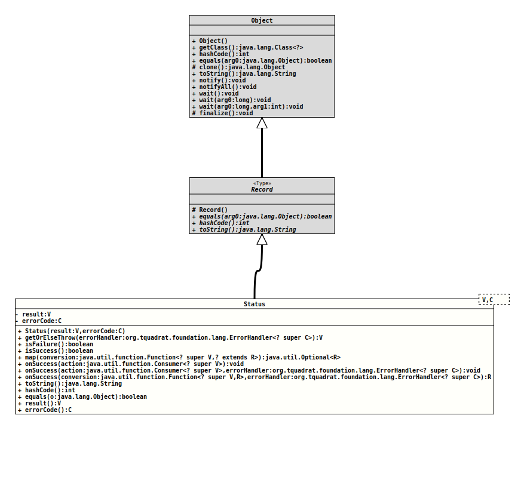

java.lang.Object
java.lang.Record
org.tquadrat.foundation.lang.Status<V,C>
- Type Parameters:
V- The type of the result value.C- The type of the error code.- Record Components:
result- The result value; can benull.errorCode- The error code; a value ofnullindicates a success.
@ClassVersion(sourceVersion="$Id: Status.java 1044 2023-02-04 09:58:19Z tquadrat $")
@API(status=STABLE,
since="0.1.0")
public record Status<V,C> (V result, C errorCode)
extends Record
Instances of this record are meant to be used as the return values for
methods that should either return a proper result, or an error code.
A sample use case may look like this:
A sample use case may look like this:
…
public final Status<Result,ErrorCode> processInput( final InputStream input ) {…}
…
…
private final Throwable errorHandler( ErrorCode ) {…}
…
…
public final Result execute( final File inputFile ) throws Throwable
{
ErrorHandler<ErrorCode> errorHandler = this::errorHandler;
try( var inputStream = new FileInputStream( inputFile ) )
{
return processInput( inputStream ).getOrElse( errorHandler );
}
}
…- Author:
- Thomas Thrien (thomas.thrien@tquadrat.org)
- Version:
- $Id: Status.java 1044 2023-02-04 09:58:19Z tquadrat $
- Since:
- 0.1.0
- UML Diagram
-

UML Diagram for "org.tquadrat.foundation.lang.Status"
{kind=link}
-
Field Summary
Fields -
Constructor Summary
Constructors -
Method Summary
Modifier and TypeMethodDescriptionfinal booleanIndicates whether some other object is "equal to" this one.Returns the value of theerrorCoderecord component.final VgetOrElse(ErrorHandler<? super C> errorHandler) Deprecated, for removal: This API element is subject to removal in a future version.final VgetOrElseThrow(ErrorHandler<? super C> errorHandler) Returns the result in case of a success, otherwise executes the given error handler and throws the exception determined by it.final inthashCode()Returns a hash code value for this object.final booleanReturns whether thisStatusinstance indicate a failure.final booleanReturns whether thisStatusinstance indicate a success.final <R> Optional<R>Performs the given conversion on success, otherwise returnsnull.final voidPerforms the given action on success, otherwise does nothing.final voidonSuccess(Consumer<? super V> action, ErrorHandler<? super C> errorHandler) Performs the given action on success, otherwise throws the exception determined by the error handler.final <R> RonSuccess(Function<? super V, R> conversion, ErrorHandler<? super C> errorHandler) Performs the given conversion on success, otherwise throws the exception determined by the error handler.result()Returns the value of theresultrecord component.final StringtoString()Returns a string representation of this record class.
-
Field Details
-
Constructor Details
-
Method Details
-
getOrElse
@Deprecated(since="0.2.1", forRemoval=true) @API(status=DEPRECATED, since="0.2.1") public final V getOrElse(ErrorHandler<? super C> errorHandler) throws RuntimeException Deprecated, for removal: This API element is subject to removal in a future version.Was replaced bygetOrElseThrow(ErrorHandler)because of the misleading name.Returns the result in case of a success, otherwise executes the given error handler and throws the exception determined by it.- Parameters:
errorHandler- The error handler.- Returns:
- The result.
- Throws:
RuntimeException- Any exception that is determined by the error handler.
-
getOrElseThrow
@API(status=STABLE, since="0.2.1") public final V getOrElseThrow(ErrorHandler<? super C> errorHandler) throws RuntimeException Returns the result in case of a success, otherwise executes the given error handler and throws the exception determined by it.- Parameters:
errorHandler- The error handler.- Returns:
- The result.
- Throws:
RuntimeException- Any exception that is determined by the error handler.- Since:
- 0.2.1
-
isFailure
Returns whether thisStatusinstance indicate a failure.- Returns:
trueif the status indicates a failure,falseotherwise.
-
isSuccess
Returns whether thisStatusinstance indicate a success.- Returns:
trueif the status indicates a success,falseotherwise.
-
map
Performs the given conversion on success, otherwise returnsnull.- Note:
-
- As the result can be
null, too (or the result of the conversion isnull, an empty return value does not necessarily indicate a failure.
- As the result can be
- Type Parameters:
R- The type of the conversion result.- Parameters:
conversion- The conversion.- Returns:
- An instance of
Optionalthat holds the converted result in case of a success, or it will be empty otherwise.
-
onSuccess
Performs the given action on success, otherwise does nothing.- Parameters:
action- The action.
-
onSuccess
public final void onSuccess(Consumer<? super V> action, ErrorHandler<? super C> errorHandler) throws RuntimeException Performs the given action on success, otherwise throws the exception determined by the error handler.- Parameters:
action- The action.errorHandler- The error handler.- Throws:
RuntimeException- Any exception that is determined by the error handler.
-
onSuccess
public final <R> R onSuccess(Function<? super V, R> conversion, ErrorHandler<? super C> errorHandler) throws RuntimeExceptionPerforms the given conversion on success, otherwise throws the exception determined by the error handler.- Type Parameters:
R- The type of the conversion result.- Parameters:
conversion- The conversion.errorHandler- The error handler.- Returns:
- The converted result.
- Throws:
RuntimeException- Any exception that is determined by the error handler.
-
toString
Returns a string representation of this record class. The representation contains the name of the class, followed by the name and value of each of the record components. -
hashCode
Returns a hash code value for this object. The value is derived from the hash code of each of the record components. -
equals
Indicates whether some other object is "equal to" this one. The objects are equal if the other object is of the same class and if all the record components are equal. All components in this record class are compared withObjects::equals(Object,Object). -
result
Returns the value of theresultrecord component.- Returns:
- the value of the
resultrecord component
-
errorCode
Returns the value of theerrorCoderecord component.- Returns:
- the value of the
errorCoderecord component
-
getOrElseThrow(ErrorHandler)because of the misleading name.